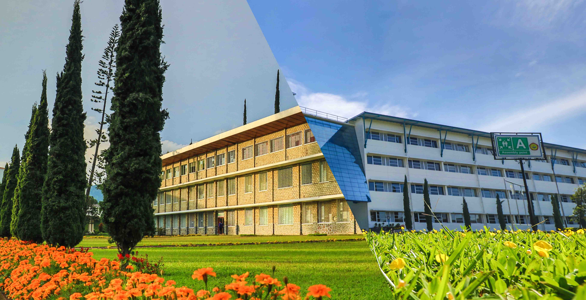

Hello! here's simple imformation about me
Let me introduce myself, my name is Rico Sodilutu Sinaga. I am from Pangkalan Bun, Central Kalimantan, I was born in Tuktuk Lobu, North Sumatra on April 10 2003 majoring in Informatics Engineering because I want to work in the web developer field
What is UNAI?

Universitas Advent Indonesia (UNAI) is a Hingher Education institution managed by the seventh-day Adventist Church of the western Union of Indonesia. The history of UNAI is that is was founded in Cimindi in 1929 which was originally called Opleiding School der Advent Zending. In the past, this school was founded for the education of the Seventh-day Adventist Church.
Universitas Advent Indonesia has 6 faculties:
1) Fakulty of philosophy
2) Fakulty of Teacher Trainig & Education
3) Fakulty of Economics
4) Fakulty of Nursing
5) Fakulty of Mathematics and Natural Sciences
6) Fakulty of Information Technologi